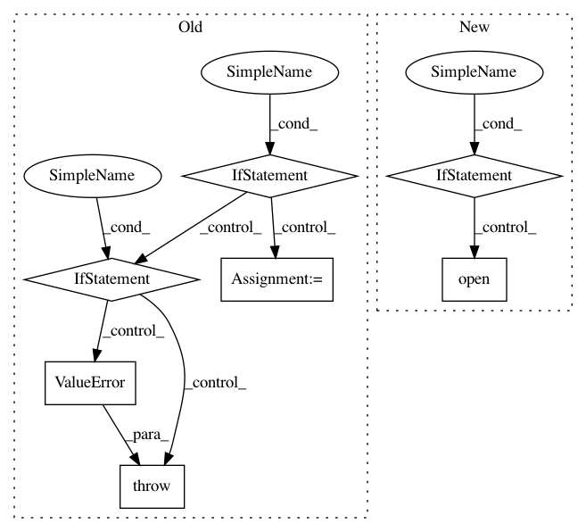

6ff2e7c602123787c3b0061466ab5bb8663eae81,pandas/_testing/contexts.py,,ensure_clean,#Any#Any#,76
Before Change
kwargs["suffix"] = filename
if return_filelike:
f = tempfile.TemporaryFile(**kwargs)
try:
yield f
finally:
f.close()
else:
// Don"t generate tempfile if using a path with directory specified.
if len(os.path.dirname(filename)):
raise ValueError("Can"t pass a qualified name to ensure_clean()")
try:
fd, filename = tempfile.mkstemp(**kwargs)
except UnicodeEncodeError:
import pytest
pytest.skip("no unicode file names on this system")
try:
yield filename
finally:
try:
os.close(fd)
except OSError:
print(f"Couldn"t close file descriptor: {fd} (file: {filename})")
try:
if os.path.exists(filename):
os.remove(filename)
except OSError as e:
print(f"Exception on removing file: {e}")
@contextmanager
def ensure_clean_dir():
Get a temporary directory path and agrees to remove on close.
After Change
path.touch()
handle_or_str: Union[str, IO] = str(path)
if return_filelike:
kwargs.setdefault("mode", "w+b")
handle_or_str = open(path, **kwargs)
try:
yield handle_or_str
finally:
if not isinstance(handle_or_str, str):
In pattern: SUPERPATTERN
Frequency: 3
Non-data size: 7
Instances
Project Name: pandas-dev/pandas
Commit Name: 6ff2e7c602123787c3b0061466ab5bb8663eae81
Time: 2021-01-18
Author: twoertwein@users.noreply.github.com
File Name: pandas/_testing/contexts.py
Class Name:
Method Name: ensure_clean
Project Name: neurosynth/neurosynth
Commit Name: e4f774a55446bb6f7fab43d999dd6fea24158e26
Time: 2014-10-27
Author: tyarkoni@gmail.com
File Name: neurosynth/analysis/cluster.py
Class Name: Clusterer
Method Name: cluster
Project Name: prody/ProDy
Commit Name: e93f4d4dcd70fc3eaf87779fc9f0b34f98e04ac8
Time: 2012-10-17
Author: lordnapi@gmail.com
File Name: lib/prody/utilities/pathtools.py
Class Name:
Method Name: gunzip